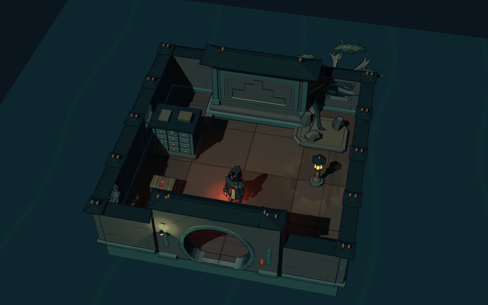
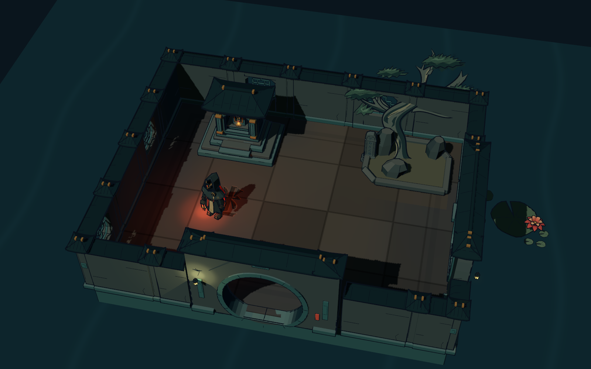
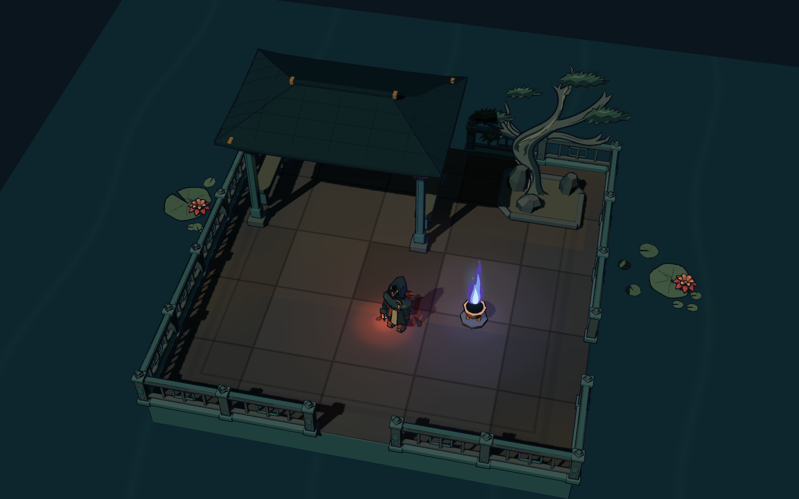
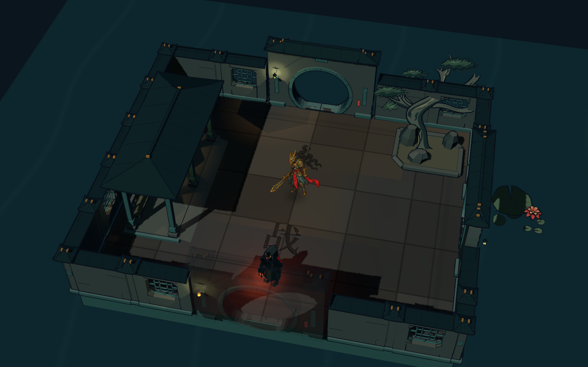
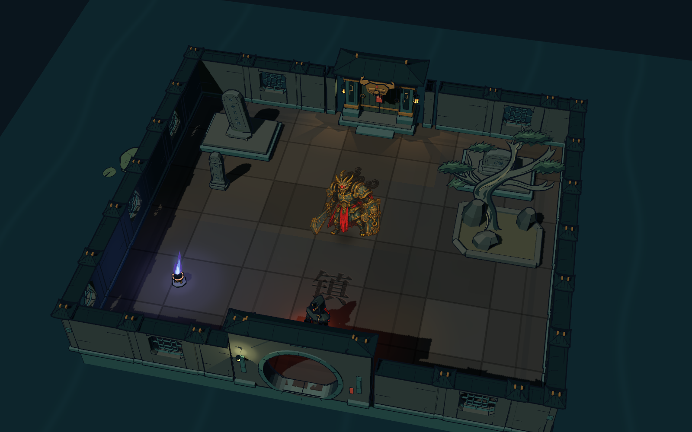
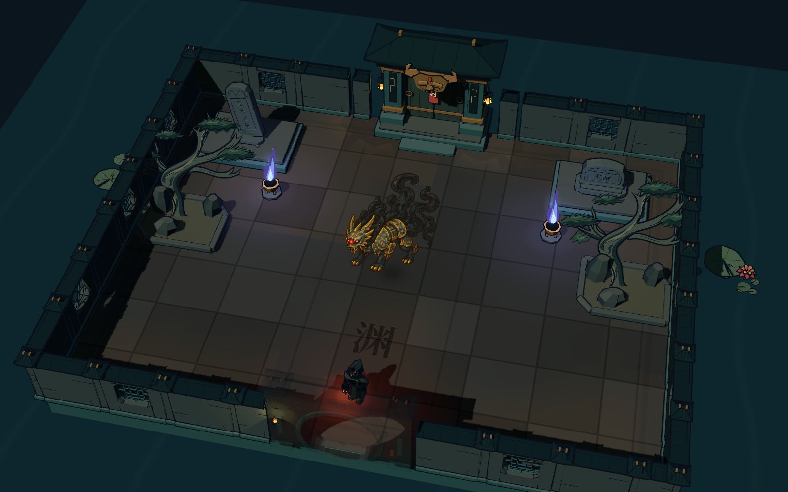
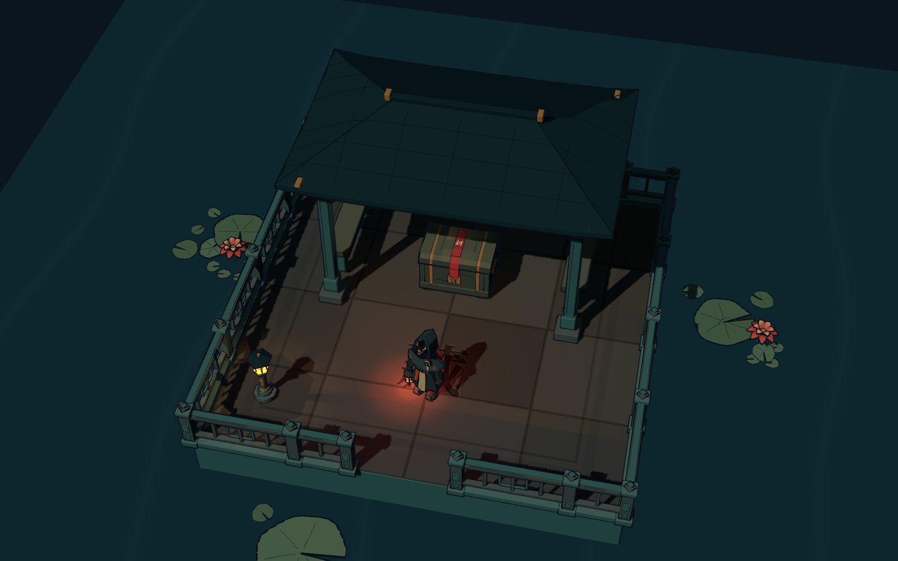
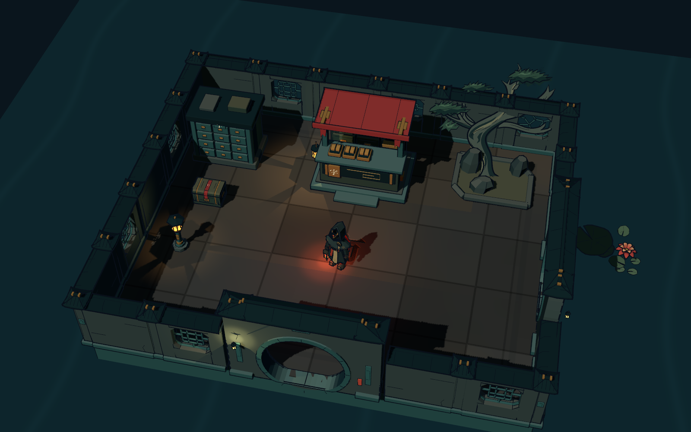

完整围合 / 明确落位 / 中央通路 / 松石植床 / 原生模型与随机地图共用

四面同款院墙，照壁对景；字柜、箱匣与灯收在两侧，中央整备。

完整漏窗墙院；碑龛靠后墙、松石落在植床内，月门形成折景。

整座临水石台统一用栏杆围合；开放水榭、石凳与鬼火组成休整区，不混用院墙。

同款墙体围合四周，游廊依西墙；松石集中在角落，中央空庭保持可通行。

北面镇门、两翼高低碑，中间留宽阔交战庭。清理后北门开启。

兽面大门在后，两翼碑灯夹景。中央仪式庭留白，通关出口不与入口混用。

四边连续栏杆的荷池水榭，宝匣置于同一屋顶下；两侧留绕行通道，开口只设栏端柱。

字摊靠后墙，箱柜偏左；前方两格整备区连到东侧出口。